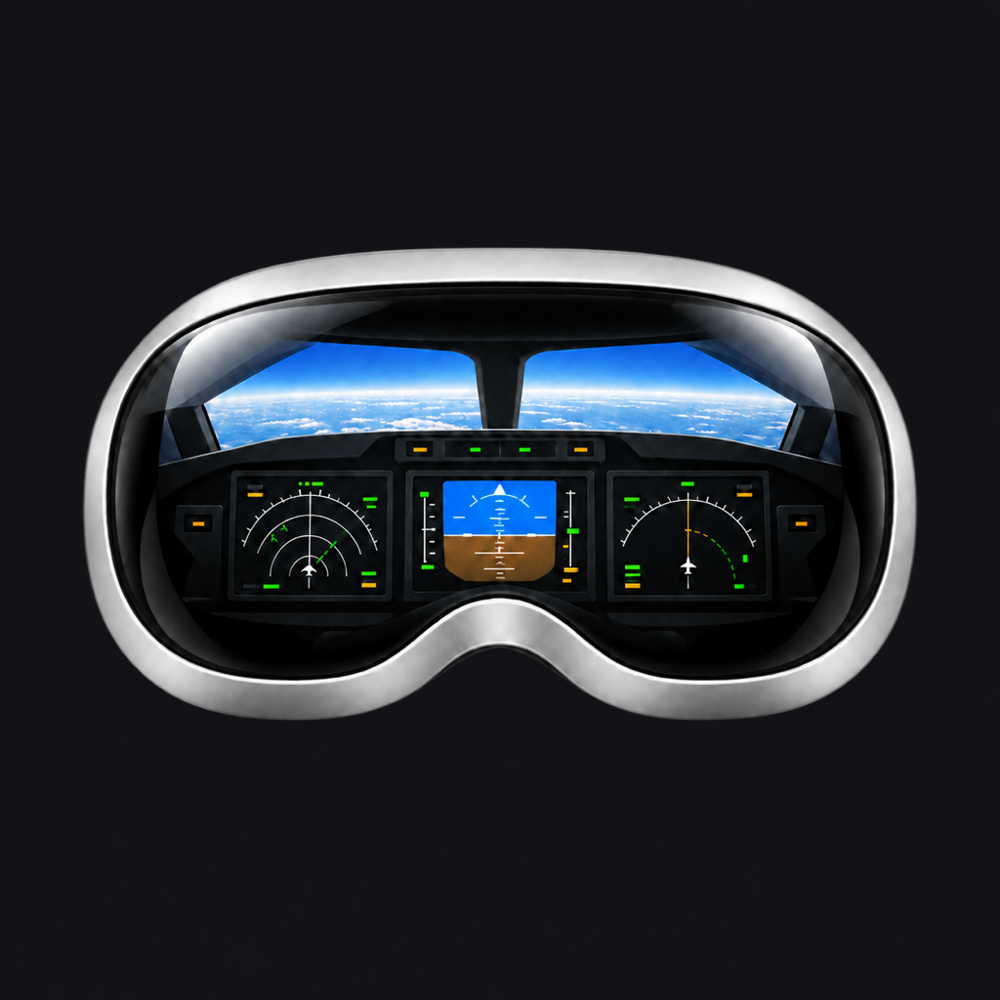

Outside View
Hardware-encoded video from a physical display or the included virtual ultrawide monitor. A small control preview keeps X-Plane within reach.

XPPanelsVR CompanionFOR MAC + APPLE VISION PRO
Connect your X-Plane instruments and ultrawide outside view
to the cockpit in your headset.
macOS 15+ Version 0.1.2 Signed & notarized
THE COMPUTER SIDE OF YOUR COCKPIT
Keep X-Plane on your Mac. Companion brings its displays to XPPanelsVR.
Hardware-encoded video from a physical display or the included virtual ultrawide monitor. A small control preview keeps X-Plane within reach.
Stream PFDs, NDs, ECAMs, both MCDU LCDs and ISIS. Guided opening, sizing and placement keep instrument windows off the outside-view monitor.
Choose your simulator folder and install the included XPPanelsBridge. Recognized existing installations are backed up before replacement.
Companion is the required Mac component for live instruments and Outside View in XPPanelsVR. One installer includes the bridge and simulator plugin; no separate DeskPad, BetterDisplay, WebFMC or developer tools are needed. XPPanelsVR is available on the App Store for Apple Vision Pro. Simulator, aircraft and headset app licences are separate.
OFFICIAL MAC INSTALLER
Build 3 · October 2, 2026 · Universal binary
The installer identifies Aldo Mendes Martins (AldoApps) as its publisher. Its Apple notarization ticket is included, and macOS Gatekeeper verification has passed. Install through the standard macOS installer with your security protections enabled.
Install Companion on the Mac running X-Plane, then connect your headset on the same trusted home network. Your simulator video travels directly between your devices, not through an AldoApps cloud streaming service.
Download for Mac .pkgInstaller downloads, not unique people or installations. Repeat downloads and updates count again.
Checking GitHub... Source: GitHub
First setup takes a few minutes. Companion guides you through installing its X-Plane plugin and granting the macOS permissions needed for screen sharing and optional window placement. Follow the setup guide.
XPPanelsVR for Apple Vision Pro has been approved for App Store distribution. This separate Mac Companion is distributed directly by AldoApps with Developer ID signing and Apple notarization. Notarization checks for known malicious software; it is distinct from App Store review and is not a guarantee of compatibility with every Mac or simulator configuration. Read Apple's explanation.
A first-open confirmation is normal for downloaded apps. Keep Gatekeeper enabled. If macOS reports malware, damage or an unverifiable publisher, stop and contact support; do not bypass that warning.
The virtual monitor uses a private macOS interface and may break after an OS update. Physical-display capture is the fallback. Resolution and 30 fps settings are targets, not performance guarantees.
FROM DOWNLOAD TO COCKPIT
Quit X-Plane, then Companion. Install the package and open the app from Applications. Review and grant the required macOS permissions.
Choose your X-Plane folder in Setup, then Install / Update Plugin. Do this even when upgrading an existing Companion installation.
Create the monitor before launching X-Plane. Select it in Graphics, then use Open Missing Displays. Leave the mouse untouched while setup finishes.
Start Sharing, allow Outside View and approve the headset address. Use port 49200 for displays, then reconnect the headset viewers.
Include your Mac, macOS, simulator and aircraft versions.
Review diagnostics before sharing. Never send passwords.